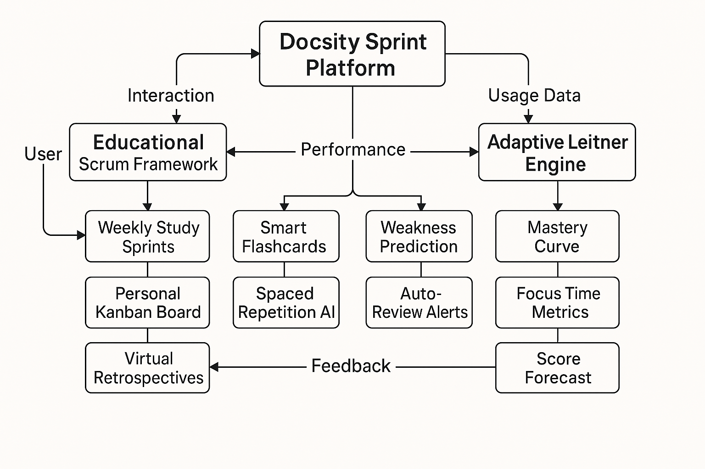
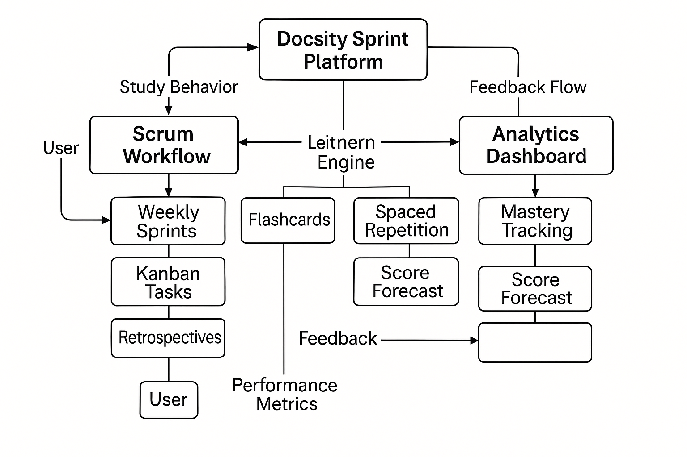
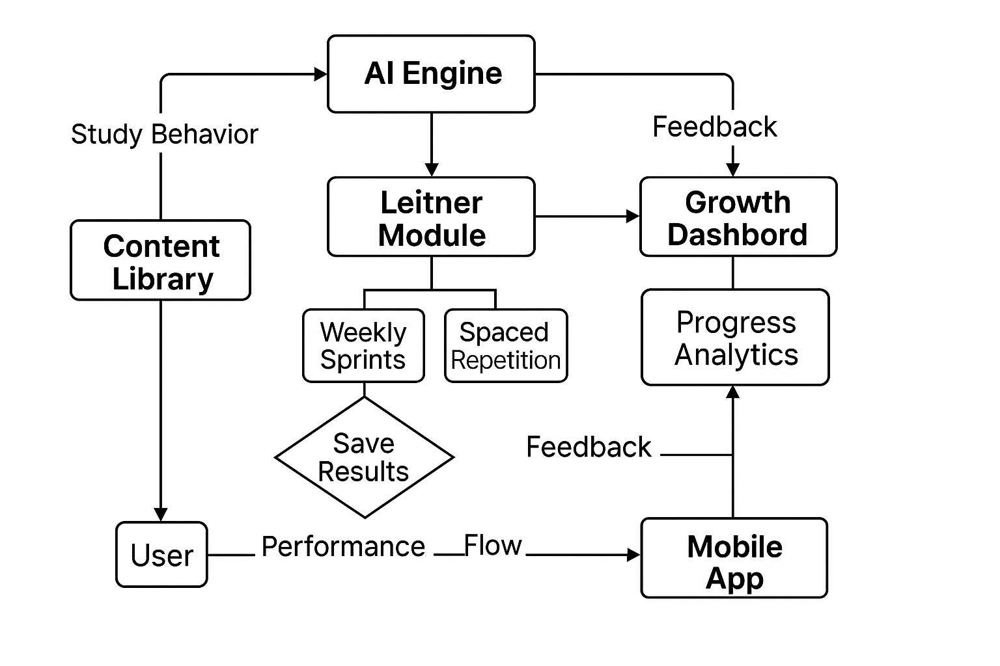

Dear Hiring Team at Docsity,
I am writing to express my interest in the Product & Operations Lead position at Docsity. With over twelve years of experience in designing financial systems, executing algorithmic trading strategies, and managing fintech projects, I am confident in my ability to contribute effectively to your product development and operational success.
My background includes leading the architecture of a Python-based Decision Support System for real-time market-making, developing LSTM-based models for price trend forecasting, and managing cross-functional teams on data-driven trading initiatives. These projects - particularly GravityWaves, my AI-based forecasting platform - demonstrate my ability to translate market data into actionable product features with precision and strategic insight.
Though I am currently based in Iran, I am actively preparing for relocation to Italy, where my sister lives in Turin. Her presence provides a stable and supportive foundation for cultural and logistical integration, ensuring minimal disruption during onboarding. I view this relocation not as a challenge, but as an opportunity to bring global perspective, adaptability, and resilience to your team.
To provide clarity around my professional positioning, I offer the following overview of my candidacy:
| Strengths | Weaknesses |
|---|---|
| Extensive experience in algorithmic trading and product design | Lack of fluency in Italian (currently learning) |
| Proven execution of AI-driven forecasting platforms | Residency outside Italy requiring relocation |
| Proficiency in Python, GitHub CLI, CI/CD automation | Limited work experience in European markets |
| Opportunities | Threats |
|---|---|
| Transfer of specialized insights from emerging markets | Visa process and potential onboarding delays |
| Family support in Turin enabling smooth transition | Initial limitations in local networking and integration |
| Contribution to Docsity’s AI and data-oriented projects | Rapid adaptation expected within a dynamic work culture |
Docsity’s commitment to meaningful learning and data-powered innovation strongly aligns with my professional values. I am excited to contribute not only technical knowledge but also strategic leadership and international perspective to your team. Thank you for considering my application.
In addition to my technical expertise, I propose an innovative approach to platform development and educational planning that integrates advanced time management and project control systems with adaptive learning methodologies. This approach combines a growth analytics dashboard, an AI-powered Leitner system for personalized training, and Scrum-based lesson planning to optimize both product development and user learning outcomes.
From my perspective, this project embodies a fluid and intelligent ecosystem where user behavior, adaptive learning, and performance analytics are interconnected in a continuous cycle of improvement. The platform’s architecture connects educational planning with spaced repetition, predictive feedback, and growth tracking—allowing learning to evolve responsively to the user’s progress. As study habits feed into personalized flashcard optimization, performance data drives forecasting and recommendations, while AI modules loop insights back into planning through an intuitive dashboard. This synthesis of learning design, automation, and user-centered analytics reflects how Docsity can transform from a content host into an active learning companion.
  Sincerely,
Shakour Alishahi
Email: shakouralishahi@gmail.com
Phone: +98 912 446 7903
GitHub: Shakour-Data